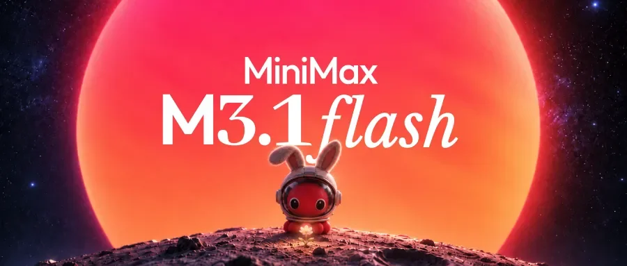

MiniMax · 大廠模型 · 文字代理模型2026-10-19
MiniMax M3.1 Flash：快 3 倍、便宜 7 成
想用便宜的模型跑 AI 代理、寫程式的人多了一個選擇；權重之後才會開放。
AI 代理（Agent）：不只回答問題，而是自己規劃步驟、呼叫工具、操作軟體把整件事做完的 AIComputer Use：讓 AI 看螢幕、點滑鼠、打字，像人一樣操作電腦
看更多
MiniMax M3.1 Flash: Redefining Agent Performance and Cost
MiniMax 10/19 正式推出新一代 Flash 模型 M3.1 Flash，官方說先前以匿名身分處理超過 200 兆 token 的「Space Bunny」就是它的早期版本。【比上一版進步在哪】官方稱在代理任務、寫程式、電腦操作（Computer Use）和資安上是「世代提升」，線上推論快近 3 倍，代理任務整體使用成本比前代低 70%；日常輸出速度可達每秒 200+ token、中位數 170+。【成績（官方自測）】DeepSWE v1.1 73.7%、OSWorld V2 61.7、Agents’ Last Exam 29.6（兩項皆稱中國模型第一）、BankerToolBench 76.2、CyberGym 82%。【價格】每百萬 token 輸入 0.15 美元、輸出 0.60 美元、快取輸入 0.015 美元。【哪裡能用】MiniMax API、M Plan 方案與桌面版 MiniMax Code；權重「之後釋出」，更強的 Pro 版也會晚點推出。目前尚無獨立實測。